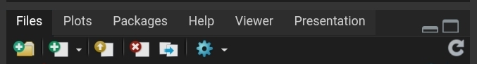
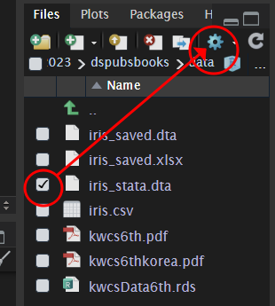
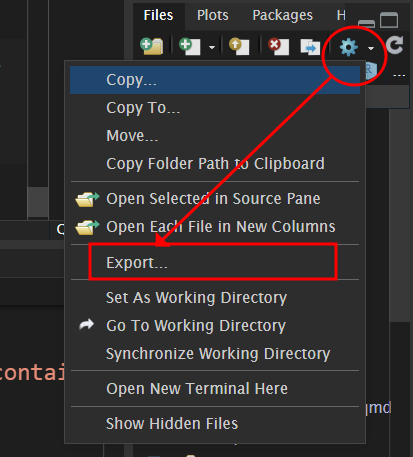

download.file("https://raw.githubusercontent.com/jinhaslab/opendata/main/kwcs/kwcsData6th.rds", "data/kwcsData6th.rds")3 데이터 불러오기
3.1 데이터 업로드
데이터를 불러오는 방법과 저장하는 방법에 대해서 이야기 하겠습니다.
로칼 데이터 불러오기
우선 rstudio 에서 upload 버튼을 사용하는 것입니다. 우측 아래에 있습니다. 여기서 화살표 위로되어 있는 버튼이 업로드 버튼입니다.

업로드 버튼을 눌러서, 파일을 업로드 하는 방식입니다. 가장 많이 사용하는 방식입니다.
웹이 있는 데이터 불러오기
웹에 있는 데이터가 링크가 있다면 다운로드 받는 방법입니다. download.file 이란 함수를 쓰고, 주소와 저장 장소 및 저장이름을 적어 주는 거입니다.
이 자료를 불러오겠습니다.
kwcs = readRDS("data/kwcsData6th.rds")
#head(kwcs)사용설명서도 다운로드 받겠습니다.
download.file("https://raw.githubusercontent.com/jinhaslab/opendata/main/kwcs/pdf3.pdf", "data/kwcs6thkorea.pdf")3.2 데이터 불러오기
3.2.1 CSV 파일
read.csv, write.csv 를 이용합니다. iris 데이터를 이용해서 실습하겠습니다.
data(iris)
write.csv(iris, "data/iris.csv")
iris_import = read.csv("data/iris.csv")data(iris) 이 부분은 R의 내장 데이터셋인 iris를 로드합니다. iris 데이터셋은 150개의 관측값과 5개의 변수 (꽃받침의 길이, 꽃받침의 너비, 꽃잎의 길이, 꽃잎의 너비, 종류)로 구성되어 있습니다. write.csv(iris, "data/iris.csv") 이 부분은 iris 데이터셋을 CSV 파일 형태로 저장합니다. 여기서 “data/iris.csv”는 파일의 경로와 이름을 나타냅니다. 해당 코드는 현재 작업 중인 디렉토리의 data 폴더 내에 iris.csv라는 이름으로 파일을 저장하려고 시도합니다. 만약 data 폴더가 존재하지 않으면 오류가 발생할 수 있습니다. write.csv 함수는 기본적으로 행 이름도 CSV 파일에 저장합니다. 따라서 CSV 파일에는 추가적으로 행 번호가 포함됩니다. iris_import = read.csv("data/iris.csv") 이 부분은 방금 저장한 iris.csv 파일을 다시 R로 읽어들여 iris_import 변수에 저장합니다. read.csv 함수는 기본적으로 첫 번째 행을 변수명으로 간주합니다. 이 때, 위에서 언급했던 추가적으로 저장된 행 번호는 첫 번째 열로 읽히게 됩니다. 이 열의 이름은 일반적으로 X로 지정됩니다. 요약하면, 이 코드는 R의 iris 데이터셋을 CSV 파일로 저장한 다음, 그 파일을 다시 R로 읽어들이는 과정을 보여줍니다.
3.2.2 excel 파일
iris 파일 excel로 저장
먼저, Excel 파일로 저장하기 위해 writexl 패키지가 필요합니다. 그리고 xlsx 파일을 불러오기 위해서는 readxl 패키지가 필요합니다. install.packages를 이용하여 패키지를 설치합니다.
install.packages("writexl")
install.packages("readxl")library(writexl)
library(readxl)iris 데이터셋을 Excel 파일로 저장합니다. 이때 write_xlsx를 이용하고, 저장하고자 하는 데이터, 그리고 저장될 이름을 경로와 함께 저장합니다. write_xlsx 함수는 writexl 패키지에 포함된 함수로, 첫 번째 인수로 받은 데이터 프레임(iris)을 두 번째 인수로 받은 경로(“data/iris_saved.xlsx”)에 Excel 파일로 저장합니다.
# iris 데이터셋을 Excel 파일로 저장
write_xlsx(iris, "data/iris_saved.xlsx")iris_xlsx <- readxl::read_xlsx("data/iris_saved.xlsx")readxl::read_xlsx("iris_saved.xlsx"), read_xlsx 함수는 readxl 패키지에 있는 함수로, 인수로 받은 경로의 Excel 파일을 R의 데이터 프레임으로 불러옵니다. rreadxl::: readxl 패키지의 read_xlsx 함수를 호출하기 위해 패키지 이름과 함께 사용되는 방식입니다. 이렇게 하면 해당 패키지를 라이브러리로 로드하지 않고도 패키지의 함수를 사용할 수 있습니다.
“data/iris_saved.xlsx”: 불러올 Excel 파일의 경로입니다. iris_xlsx: 위 코드에서 불러온 데이터를 저장하는 변수입니다. 불러온 데이터는 이 변수에 저장되므로 후에 iris_xlsx를 사용하여 데이터를 조회하거나 처리할 수 있습니다.
3.2.3 stata, sas, spss 파일
haven 패키지는 주로 SPSS, Stata, SAS와 같은 다른 통계 소프트웨어에서 사용되는 파일 형식을 R에서 읽고 쓰기 위해 사용됩니다. 이번에는 iris 데이터셋과 haven 패키지를 함께 사용하여, 데이터셋을 이러한 형식으로 저장하고 다시 불러오는 실습을 하겠습니다.
install.packages("haven")library(haven)STATA.dta
haven::write_dta(iris, "data/iris_stata.dta")아마 error 메세지가 위에 처럼 발생할 것입니다. 이는 stata에서 사용하는 데이터 형식에에는 변수명에 .이 있는 경우 error를 발생시킬 수도 있기 때문입니다. 나중에 실습하겠지만, 변수 이름을 바꾸는 과정을 통해 . 을 _로 바꾸어 보겠습니다. 즉 현재는 변수 이름이 Sepal.Length 처럼 되어 있는 것을 Sepal_Length로 변경하는 것입니다. gsub을 이용할 것입니다.
names(iris) <- gsub("\\.", "_", names(iris))
write_dta(iris, "data/iris_saved.dta")이후 data 폴더로 가서 외부 반출을 한 다음 stata에서 열어 보면 되겠습니다.
 
SPASS.sav
# iris 데이터셋을 SPSS 파일로 저장
write_sav(iris, "data/iris_spss.sav")# 저장한 SPSS 파일을 데이터 프레임으로 불러오기
iris_from_spss <- read_sav("data/iris_spss.sav")write_sav: haven 패키지의 함수로, R의 데이터 프레임을 SPSS .sav 형식으로 저장합니다. read_sav: SPSS .sav 형식의 파일을 R의 데이터 프레임으로 불러옵니다.
SAS, sas7bdat
# iris 데이터셋을 SAS 파일로 저장
write_sas(iris, "data/iris_sas.sas7bdat")Warning: `write_sas()` was deprecated in haven 2.5.2.
ℹ Please use `write_xpt()` instead.# 저장한 SAS 파일을 데이터 프레임으로 불러오기
iris_from_sas <- read_sas("data/iris_sas.sas7bdat")